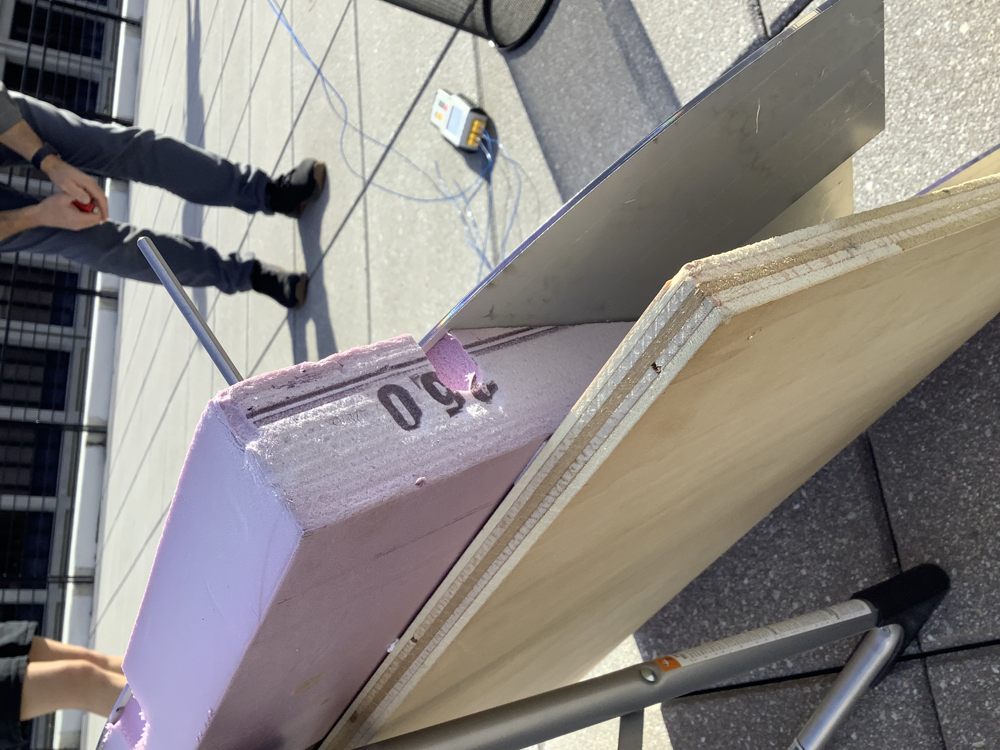
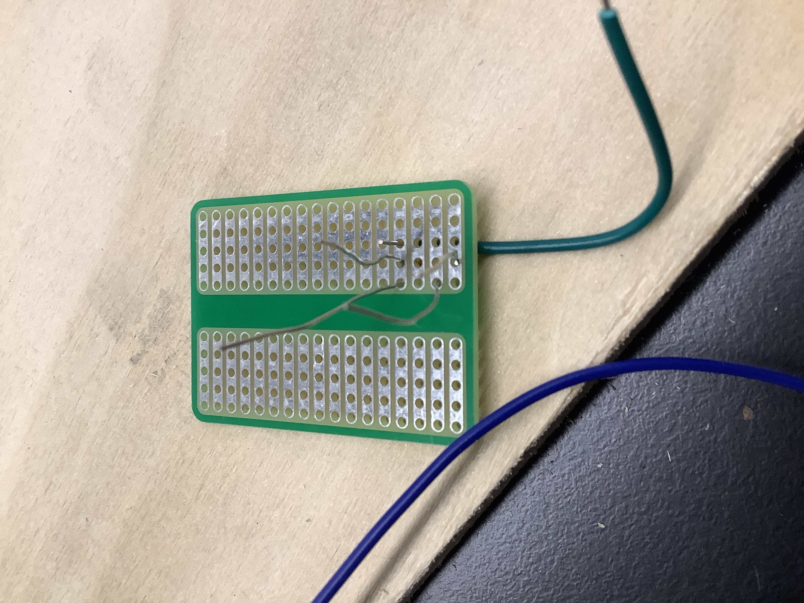
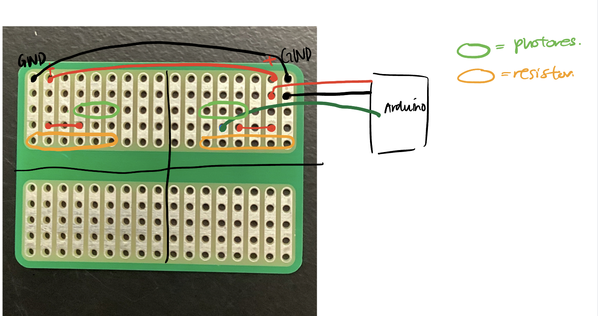

### Week 5:
### Wednesday - 10/12: Testing the Assembled Solar Array
This week, we tested out the assembed solar array by bringing it to the roof and trying to boil water
with the array. The cloud coverage was moderate on this day and there was some sunlight. We set up the solar
reflector to lean against a ladder while the pot it was heating was held up by a trashcan. This mean that
our pot was held at a fixed height while the mirror could adjust left and right, back and forth, as well as
along the rotational axis of motion. Over the course of the experiement, we were succesfully able to
increase the temperature of the water in the pot from in the 20's degC to ~60 degC. This increase took
place over the course of about an hour although the increase was neither linear nor monotonic. We found
a few issues that threw off our mesasurements:
- variable cloud coverage changing througout the day
- the need to move the array in the middle out of the shade which changed as the sun moved
- minor changes we made in the focusing and the readjustment of the solar reflector
We also ended up using a stick stuck perpendicular into the board to angle the mirror perpendicular to the sun.

A few other topics we discussed was how we might improve upon this to increase consistency and performance.
We decided that potentially using not just one reflector but multiple disjointed segments of reflector. This could
improve the ability to focus the sunlight on the reflector and adjust each mirror independently while conserving
energy by not having to move one extremely heavy piece. Another potential idea was to use smaller pieces of mirror to give
more control over where the sunlight was focused. More practically, we found that choosing a good initial location that can
avoid the need to move the array as much as possible was important too.
Another part of the project Tyler and I worked on was soldering the basic circuit for solar tracking onto a PCB instead of
leaving it on the breadboard. This would allow us to have a more compact and permanant setup. While soldering, I encountered two challenges:
1. The PCB didn't have pads to solder on like a typical PCB I was used to. This meant there was some trial and error
invovled in placing the wires and soldering around them correctly. I am still a bit concerned about how secure the wires are.
2. I had to iterate on my wiring a few times because after placing my first quadrant of photoresistor + resistor, I realized I
soldered the photoresistor too close to the edge of the PCB and in our original design, we purposefully put the photoresistor
at the center of each quadrant to have better consistency and control over how the sunlight hits the photoresistor. To fix this,
I just had to unsolder the parts and rearrange them. Below pictured is my version of a schematic for our work:


### Goals for Next Week:
1. Assemble 3d printed parts and attach solar tracker to device
2. Test out solar tracker